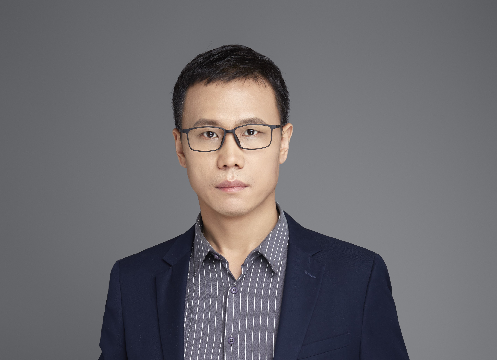

联想人工智能技术中心 执行总监
我是一名拥有20年行业经验的资深人工智能研究与落地领导者，深耕人工智能、机器学习、多媒体信息处理及大语言模型（LLM）领域的创新落地。现任联想人工智能技术中心团队模型编排，多智能体协作两大方向负责人，带领AI工程师与架构师团队，聚焦将前沿研究转化为高价值产品。
核心技术方向包括多媒体技术、人机交互、人工智能，深耕企业级AI领域。
核心研究方向为多媒体理解及其在企业领域的应用，技术专长覆盖：大语言模型（LLM/AIGC）（含LLM微调、提示工程）；数字人与虚实融合（XR）（空间计算、多设备自然融合交互）；多媒体信息处理（计算机视觉、深度学习）；AI架构（端云一体化平台、异构知识系统）。
作为技术负责人及首席架构师，主导的项目取得显著商业与社会价值：
工作成果获多项顶级行业与学术荣誉：
团队与院士团队联合招聘企业博士后（导师含国家杰青/万人计划获得者）：
| 📅 日期 | 核心事件 |
|---|---|
| 2026/01/08 | 联想在CES发布首款个人超级AI智能体Qira，3大核心技术中「模型编排」「多智能体协作」2项由我团队研发。 https://news.sina.com.cn/sx/2026-01-08/detail-inhfqtyr6702300.shtml |
| 2025/11/10 | 西交-联想产业AI实验室3篇论文被AAAI 2026录用，其中联想主导1篇，西安交大主导2篇。 |
| 2025/10/21 | 「超写实数字人技术」项目顺利通过北京市科技计划综合绩效评价。 | 2025/05/09 | 受邀在2025中国图象图形大会「文字识别与文档智能」论坛作题为“从任务专用到通用化：基础模型时代的图像分割演进”的特邀报告。 |
| 2024/06/25 | 自研向量模型Zhihui_LLM_Embedding以76.7分登顶MTEB检索榜单（全球第一）。 |
| 2024/03/31 | 受邀在第一届中国具身智能大会（CEAI 2024）「具身智能与智能汽车」分论坛做技术报告。 |
| 2024/03/17 | 「智慧教学环境构建中虚实融合关键技术及重大应用」项目获2023年产学研合作创新成果一等奖。 |
| 2024/01/09 | 团队研发的车载智能助手在CES 2024首发，搭载自研数字人生成、知识增强车载大模型。 |
| 2023/09/27 | 「数实融合精准导学关键技术及应用」项目获CCF科技进步一等奖。 |
| 2023/06/19 | 团队斩获国际文档分析与识别大会（ICDAR）主办的通用文档理解（DUDE）学术竞赛冠军。 |
| 2022/12/27 | 团队智慧教育解决方案获评量子位年度AI最佳解决方案TOP 10。 |
Executive Director, Lenovo AI Technology Center
I am a highly accomplished AI Engineering leader with 20 years of experience in driving innovation across AI, Machine Learning, Multimedia Information Processing, and Large Language Models (LLM). I lead a team of AI engineers and architects at Lenovo, focused on turning cutting-edge research into high-impact products.
My main technical directions include Multimedia Technology, Human-Computer Interaction, and Artificial Intelligence. I specialize in Enterprise AI.
My primary focus is on Multimedia Understanding and its application in enterprise sectors. My technical expertise spans Large Language Models (LLM/AIGC), including LLM fine-tuning and Prompt Engineering; Digital Human and Virtual-Real Fusion (XR), leveraging Spatial Computing and Multi-device Natural Fusion Interaction; Multimedia Information Processing, focusing on Computer Vision and Deep Learning; and AI Architecture, specializing in End-Cloud integrated platforms and Heterogeneous Knowledge Systems.
As the technical lead and chief architect, my projects have achieved significant commercial and societal impact.
My work has been recognized with numerous top-tier industry and academic honors:
Our team is jointly recruiting Enterprise Postdoctoral positions with Academician teams (mentors include recipients of the National Science Fund for Distinguished Young Scholars/Ten Thousand Talents Program).
| 📅 Date | Highlight Event |
|---|---|
| 2026/01/08 | Lenovo launched its first personal super AI agent Qira at CES; 2 of the 3 key technologies—Model Orchestration and Multi-agent Collaboration—are from my team. https://news.sina.com.cn/sx/2026-01-08/detail-inhfqtyr6702300.shtml |
| 2025/11/10 | 3 papers from the XJTU-Lenovo Industrial AI Lab have been accepted by AAAI 2026. One was led by Lenovo, and two were led by Xi'an Jiaotong University. |
| 2025/10/21 | The project on "Ultra-realistic Digital Human Technology" successfully passed the Beijing Science and Technology Program comprehensive performance evaluation. |
| 2024/06/25 | Self-developed vector model, Zhihui_LLM_Embedding, scored 76.7, topping the MTEB Retrieval Leaderboard (1st Place). |
| 2024/03/31 | Invited to deliver a technical report at the "Embodied AI and Smart Vehicles" sub-forum at the 1st China Embodied AI Conference (CEAI 2024). |
| 2024/03/17 | Project on "Key Technology and Major Applications of Virtual-Real Fusion in Smart Teaching Environment Construction" won First Prize of the 2023 Industry-University-Research Cooperation Innovation Award. |
| 2024/01/09 | Team's R&D of the In-Vehicle Smart Assistant debuted at CES 2024, featuring self-developed Digital Human generation and knowledge-enhanced in-car LLM. |
| 2023/09/27 | Project on "Digital-Real Fusion for Precise Guided Learning Key Technologies and Applications" won First Prize of the CCF Science and Technology Progress Award. |
| 2023/06/19 | Team won the Document Understanding of Everything academic competition organized by the International Conference on Document Analysis and Recognition (ICDAR). |
| 2022/12/27 | Team's Smart Education Solution was named a Qubit Annual AI Best Solution TOP 10. |